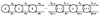
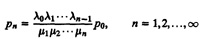
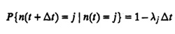
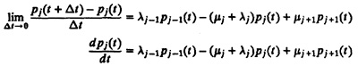
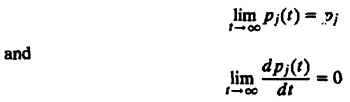
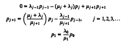
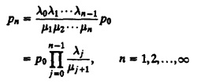
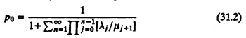

| Previous | Table of Contents | Next |
If it is fast and ugly, they will use it and curse you;
if it is slow, they will not use it.—David Cheriton
The simplest queueing model is one that has only one queue. Such a model can be used to analyze individual resources in computer systems. For example, if all jobs waiting for the CPU in a system are kept in one queue, the CPU can be modeled using results that apply to single queues. This chapter presents results for several such queues. Many of these queues can be modeled as a birth-death process. Therefore, the chapter begins with a discussion of these processes in Section 31.1. The result obtained there is then used in the subsequent sections on various types of queues.
As discussed in Section 30.4, a birth-death process is useful in modeling systems in which jobs arrive one at a time (and not as a batch). The state of such a system can be represented by the number of jobs n in the system. Arrival of a new job changes the state to n + 1. This is called a birth. Similarly, the departure of a job changes the system state to n – 1. This is called a death. The number of jobs in such a system can therefore be modeled as a birth-death process.
In this section, an expression for state probabilities (probability of having n jobs in the system) for a general birth-death process is derived. Later this result will be used to analyze queues in the form of M/M/m/B/K for all values of m, B, and K.

FIGURE 31.1 State transition diagram for a birth-death process.
The state transition diagram of a birth-death process is shown in Figure 31.1. When the system is in state n, it has n jobs in it. The new arrivals take place at a rate λn. The service rate is µn. We assume that both the interarrival times and service times are exponentially distributed.
The steady-state probability of a birth-death process being in state n is given by the following theorem.

ρ{n(t + Δt) = j + 1 | n(t) = j} = probability of one arrival in Δt
= λjΔt
ρ{n(t +Δt) = j – 1|n(t) = j} = probability of one departure in Δt
= µjΔt



0 =λj–1pj–1 – (µj + λj)pj + µj+1pj+1

The solution to this set of equations is

Theorem 31.1 allows us to determine equilibrium probabilities pn in terms of ρ0, which in turn can be computed using the additional condition that the sum of all probabilities must be equal to 1. This gives

Once state probabilities have been determined using Equations (31.1) and (31.2), we can compute many other performance measures. We illustrate this for M/M/1 queues in the next section. Several other queues are also discussed later in this chapter.
| Previous | Table of Contents | Next |
){kind=link}
){kind=link}